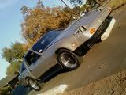

-
[quote]Careless wrote:Originally posted by floridaZWell, what is your idea of how much power it would free up? I have yet to see anybody dyno a car just to see what difference an efan makes and probably never will. And until somebody actually does that, we will never really know.Originally posted by floridaZFeedback- viewtopic.php?f=18&t=19840

-
Im also considering this mod. Ima pick one off the junk yard. Ive read alot of people use the taurus e fan. I have also read about people using maxima fans. I wana get the maxima fan because its two fans instead of just one. But stupid question for any one who could help. What year maxima has the fans i need? -
A clutch fan will pull more CFM, but it does draw power. I don'tthink it is relevent, but on a 1500whp supra we picked up 56whp by doing electric fans. You WILL make a little more power on an electric fan.
I would do it to keep the car from sounding like a damn jeep.86 hardtop shell, 93 SC300 engine, 95 soarer bellhousing, 91 supra transmission, 95 Q45 differential hubs and driver's side axle, 1992 300ZX turbo driver side axle and calipers, 2004 350Z Rotors, 87 300ZX front end/hood, 1999 Viper radiator, 1992 Mustang throttle body. Lots of glue and tape to keep it all together. -
Glad you posted some numbers.StreetFighter wrote: A clutch fan will pull more CFM, but it does draw power. I don'tthink it is relevent, but on a 1500whp supra we picked up 56whp by doing electric fans. You WILL make a little more power on an electric fan.
I would do it to keep the car from sounding like a damn jeep.
I was told by a friend of mine that he picked up 25-30 some odd hp on a 400 SBC.
I would happily assume (and test, if I really wanted to put a stupid clutch fan back on my engine) that my engine is making at least 10 more hp with the fan out of the way. Especially since the friggen thing was seized.
LOL @ Jeep. I have a friend with a 4.0 I6 that sounds like it's climbing the tallest mountain through one of it's caves when it's idling. -
I have a Jeep too and every 4.0 cherokee begins to heat up just sitting and idling. The engine driven fan doesnt pull enough at idle so the auxillary efan cycles on and off. I suppose the 12" tall radiator doesnt help things but you get my point.
I personally have a taurus 2 speed fan on mine and it never heats up enough to use high speed. I do however have it wired so that when I turn on my ac, it turns on high. There is also a temp probe that will set it on high if it gets too hot as well. Works great and opened up tons of space.'85 300zx turbo: exhaust, intercooler, coilovers, etc…SOLD, will be missed
'86 300zx turbo: starting over
'97 Dodge 2500: 12v Cummins …selling and will be missed
'94 Jeep Cherokee: D60 Front 14b rear, both locked and 5.38 gears, 37" mtr's
2015 Ram 2500 megacab laramie cummins black appearance package -
Truth. I hate that sound. I much like to hear the engine, not the cooling system.StreetFighter wrote: A clutch fan will pull more CFM, but it does draw power. I don'tthink it is relevent, but on a 1500whp supra we picked up 56whp by doing electric fans. You WILL make a little more power on an electric fan.
True, but it pulls that extra CFM 12" away from the radiator. An e-fan, if it's decent and has a little shroud and foam to seal it to the radiator, will cool better with less CFM.
I'm using my condenser fan on the radiator, and it seems to be cooling just fine. But it's also not in the middle of the summer… (and it's not zip tied to the wrong side)
I plan on getting a bigger one, since this thing can't flow more than 200 CFM…
I would do it to keep the car from sounding like a damn jeep.
The most important things for me were a) the room, and b) the sound.BLOZ UP.com
It is not recommended to confirm proper installation by driving into walls or other barriers as this could cause personal injury or damage to the vehicle. -
I too would be interested which year maxima fans people are using?lovemyfairlady wrote: Im also considering this mod. Ima pick one off the junk yard. Ive read alot of people use the taurus e fan. I have also read about people using maxima fans. I wana get the maxima fan because its two fans instead of just one. But stupid question for any one who could help. What year maxima has the fans i need?
I'm interested in the mod simply to allow more room in the front of the engine bay.
I live in aus and its summer over here at the moment and my clutch fan is engaging quite regurlaly. The sound is also quite annoying.1993 BNR32 GTR - White
Apexi Front/Rear Carbon Strut Brace | Apexi Power Intake Kit | R33 GTR VSPEC Brembos | OHLIN Coilovers | 3.5" Invidia Exhaust (Catback) | HKS Front Pipes | Greddy Profec B Spec II | 17x9.5 Enkei RP-01 W/17x45x245 | Larger FMIC | HKS Adj Cam Gears | Nistune - 253Awkw(339Awhp)@12.5PSI -
I think you need the 89-94 model Maxima fans. Please someone correct me if I am wrong?Chicks dig me, rust fears me. -
that's right.Originally posted by AZ-ZBum -
How do you have it wired up? What size relays and fuses?85z31t88 wrote:
I personally have a taurus 2 speed fan on mine and it never heats up enough to use high speed. I do however have it wired so that when I turn on my ac, it turns on high. There is also a temp probe that will set it on high if it gets too hot as well. Works great and opened up tons of space.
I'm gonna be changing my radiator setup when I get my Z running. I guess I can set it to run on low all the time and switch to high when I turn on the AC and/or the temp goes over 180 like yours. My Microtech ecu has a trigger wire that you can hook up to the fan relay that turns it on at whatever temperature I set it to. I can use that for the high speed I guess. So there's no need for a thermo temp switch. How do I need to wire it up so the fan doesn't get power to the low and high speed at the same time?Shiro #443

-
All the information you seek will be in here:
viewtopic.php?f=4&t=14762&hilit=+fan
8)'85 300zx turbo: exhaust, intercooler, coilovers, etc…SOLD, will be missed
'86 300zx turbo: starting over
'97 Dodge 2500: 12v Cummins …selling and will be missed
'94 Jeep Cherokee: D60 Front 14b rear, both locked and 5.38 gears, 37" mtr's
2015 Ram 2500 megacab laramie cummins black appearance package -
My 4th gen Maxima (95-99) looked like it had fans that would work, but i didn't try so its all on you :Pzachary.ard wrote: I think you need the 89-94 model Maxima fans. Please someone correct me if I am wrong?- VG30DET (HE341) 86 300ZX - 1982 280ZX Turbo - Headered NA 1986 300ZX 2+2 - 2000 Xterra - -
i used some from a 97 maxima. They fit with a little trimming86na2t + holset
feedback
viewtopic.php?f=18&t=6114&hilit=andrew+gardner -
Cheers guys!
I might head down to my local wreckers tomorrow and take a look
If memory serves theres an 89 and a 95 maxima there though i cant remember if the fans are still remaining on the wrecks. If they dont cost too much and are both there might just grab both.1993 BNR32 GTR - White
Apexi Front/Rear Carbon Strut Brace | Apexi Power Intake Kit | R33 GTR VSPEC Brembos | OHLIN Coilovers | 3.5" Invidia Exhaust (Catback) | HKS Front Pipes | Greddy Profec B Spec II | 17x9.5 Enkei RP-01 W/17x45x245 | Larger FMIC | HKS Adj Cam Gears | Nistune - 253Awkw(339Awhp)@12.5PSI -
I used a dual fan from a 1997 Camry i had works great on my custom core.

Copyright © 2006–. All rights reserved. Privacy Policy